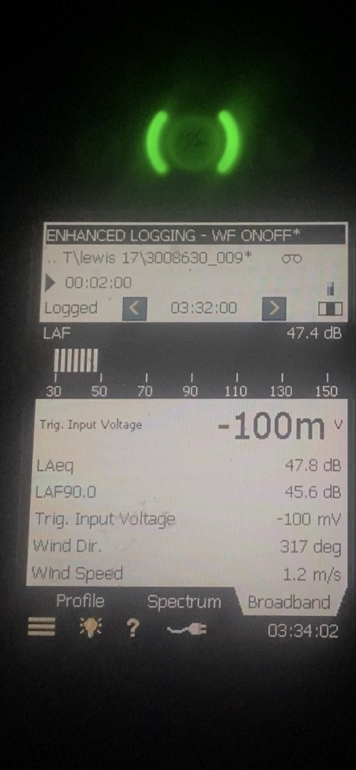

Operational Correspondence
Selected Beneficiary and Trustee correspondence, operational observations, complaint administration and administrative resolution pathways associated with the Lal Lal Wind Farm.
A progressively developed public record
The correspondence record extends across construction, operation, complaint administration, dispute-resolution processes and later formal administrative engagement. Publication is being undertaken progressively so that visitors can follow the development of the record as additional material is reviewed and added.
Page status
Active development
Initial structure published.
Documentary review
In progress
Source correspondence is being reconciled chronologically and by capacity.
Publication method
Selected case studies
Material is curated for documentary significance rather than reproduced as an undifferentiated email archive.
Capacity control
Separated throughout
Beneficiary correspondence and Trustee correspondence are presented as distinct records.
What this page records
This page presents selected correspondence and supporting material that materially assists in understanding the operational and administrative history of the project. It is designed to show the chronology and documentary context of engagement, including what was raised, what pathway was used, what response was recorded and what later material became relevant.
Routine acknowledgements, logistical exchanges and repetitive correspondence will generally not be reproduced unless they have independent documentary significance.
Terminology and capacity
- The Beneficiary is identified as the occupier of the dwelling at J14aa.
- The repository uses occupier and occupies consistently, except where different wording appears within a direct quotation from source material.
- Correspondence issued by the Beneficiary is not attributed to the Trustee.
- Correspondence issued by the Trustee is identified separately and in the Trustee's proper capacity.
From construction involvement to operational correspondence
The Beneficiary occupies the dwelling at J14aa and worked as a contractor during the construction phase of the Lal Lal Wind Farm. That involvement forms part of the factual background to the later operational correspondence. Following the commissioning and operation of the project, the Beneficiary progressively documented operational observations and pursued available complaint, engagement and resolution pathways.
Beneficiary Correspondence
This section will record correspondence issued by or to the Beneficiary in that capacity, including operational complaints, personal observations, requests for investigation, community engagement and resolution efforts.
Operational complaints
Selected noise, shadow flicker and related amenity reports will be presented by date, documentary response and later technical relevance.
Progressive publicationComplaint investigation
Selected records concerning investigation methods, site attendance, desktop assessment and subsequent correspondence will be presented where supported by source material.
Under documentary reviewResolution efforts
Relevant open correspondence and established resolution pathways, including the VCAT matter and open settlement offer, will be placed in chronological context.
Under documentary reviewTrustee Correspondence
This section will separately record correspondence issued by LEWIS TROJAN HORSE PTY LTD as Trustee of the Owen Robert Inter Vivos Trust. It will include formal notices, requests for administrative clarification, governance correspondence, documentary reconciliation and regulatory-record updates.
Formal documentary engagement
- Trustee notices and supporting schedules.
- Requests for clarification and identification of documentary authority.
- Administrative and governance correspondence.
- Updates provided to agencies and other record-holders.
Capacity separation
The Trustee record begins only after the establishment of the relevant trust and the Trustee's assumption of that capacity. Earlier correspondence remains attributed to the Beneficiary and is not retrospectively characterised as Trustee correspondence.
View the Formal Notice of Trustee Authority and Administration and the accompanying covering email.
Final turbine commissioning and permit obligations
The Trustee sought the document confirming commissioning of the final turbine and asked whether Planning Permit Conditions 23–27 had been formally satisfied. The final commissioning milestone is a foundational chronological trigger for a number of permit obligations and later compliance activities.
Published and developing case studies
Completed case studies link the original correspondence, any response or non-response identified on the present record, relevant technical material and the later documentary position. Additional subjects will be added progressively.
15 August 2024 noise complaint
The Beneficiary reported being woken in the early morning by turbine thumping and roaring. The correspondence records sleep interruption, a duration exceeding two hours and subsequent family impact.
SLR monitoring equipment was operating at J14aa. A contemporaneous photograph of the logger display shows LAeq 47.8 dB, LAF90.0 45.6 dB, wind speed 1.2 m/s and wind direction 317° at approximately 3:34 am. These are the values visible on the display and are published without technical conclusion.

The later operator response recorded average wind speed of 9.5 m/s and average wind direction of 353.6°, and stated that wind conditions would not have caused excessive noise. The complaint record also asks whether the logger data was reviewed during the investigation.
K15aa report-submission enquiry — October 2024
The Beneficiary identified the NCTP requirement for an updated K15aa background report and asked the operator to verify the report submitted to the Responsible Authority before operation. The operator's correspondence stated that all reports required under the planning permit were submitted to the relevant authority.
Shadow flicker reports
Selected recent reports will be presented together with acknowledgements, substantive responses and the presently identified documentary status.
In preparationComplaint investigation practices
Historical examples will be presented by reference to the documented investigation steps, attendance, duration, assessment method and subsequent correspondence.
In preparationBlade failure incident — May 2026
Video footage was supplied to the Beneficiary by a third party at 4:49 pm on 23 May 2026 and subsequently provided to the Trustee. The Trustee's enquiry of 24 May sought clarification concerning debris recovery, dispersion, surrounding land and waterways, authority notification and updated community information.
Pathways pursued over time
This section records the avenues used by the Beneficiary and, later and separately, by the Trustee. Inclusion records the pathway and its documentary outcome; it does not imply that the pathway produced a substantive resolution.
Wind farm operator
Operational complaints, requests for investigation, responses, follow-up correspondence and later formal engagement.
Moorabool Shire Council
Planning-permit administration, complaint-related engagement, governance correspondence and documentary enquiries.
EPA Victoria
Environmental complaint pathways, regulatory correspondence, statutory disclosure and later Trustee notices.
Australian Energy Infrastructure Commissioner
The Beneficiary's complaint pathway and the Trustee's later provision of documentary-record updates, presented separately.
Department of Transport and Planning
Planning administration, documentary clarification, permit-related enquiries and Freedom of Information processes.
VCAT
The historical proceeding, the open settlement offer and the documentary outcome will be presented as a resolution pathway.
Other oversight pathways
Relevant Ministerial, Ombudsman, audit or governance pathways may be incorporated where they materially assist in understanding the record.
Trustee notices
The Trustee's formal notices and reconciliation requests will be linked to the issues and earlier correspondence from which they developed.
How each completed record will be presented
What this page does not do
- It does not reproduce every complaint or every item of correspondence.
- It does not merge the Beneficiary's correspondence with the Trustee's later administrative record.
- It does not characterise a matter as unanswered unless the assembled documentary record supports that description.
- It does not present a later technical document as though it existed at the time of an earlier complaint.
- It does not make findings of legal liability, professional misconduct or regulatory non-compliance.
- It does not remove or replace any existing page or source document within the repository.
Further material will be added progressively
The repository is maintained as a living documentary record. Further correspondence, case studies and supporting documents will be added as they are reviewed, reconciled and prepared for publication. Page updates will preserve the distinction between the Beneficiary and the Trustee and the locked occupier terminology used throughout this record.